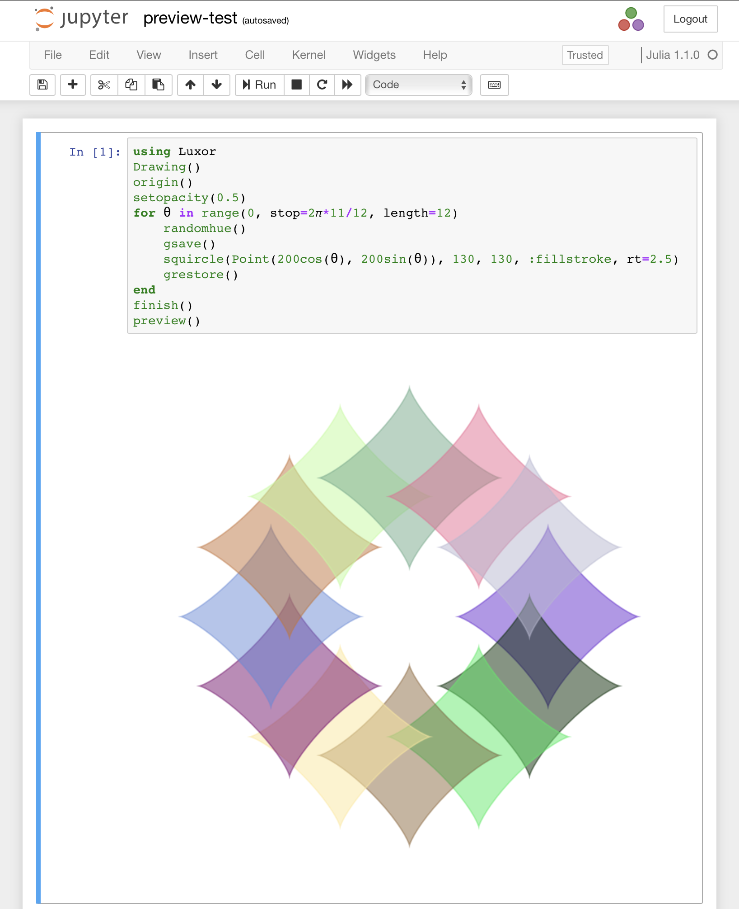
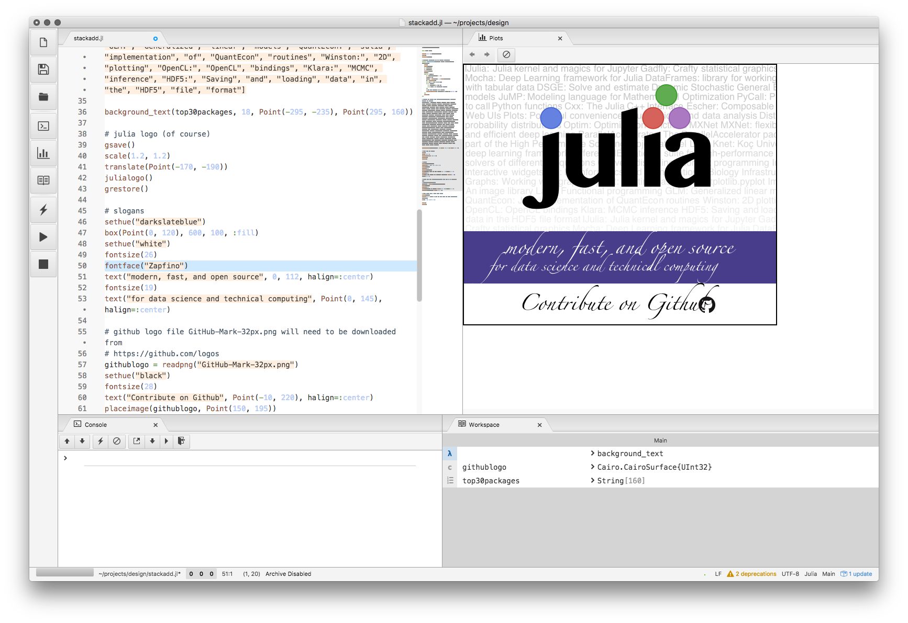
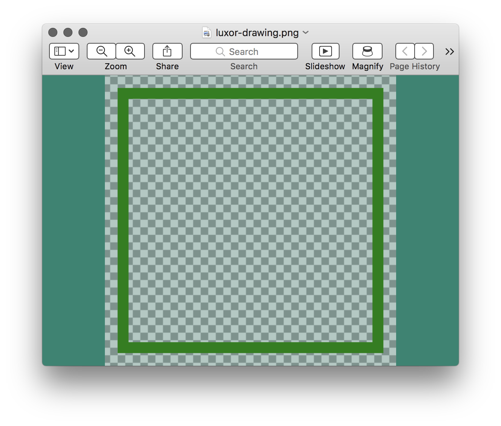
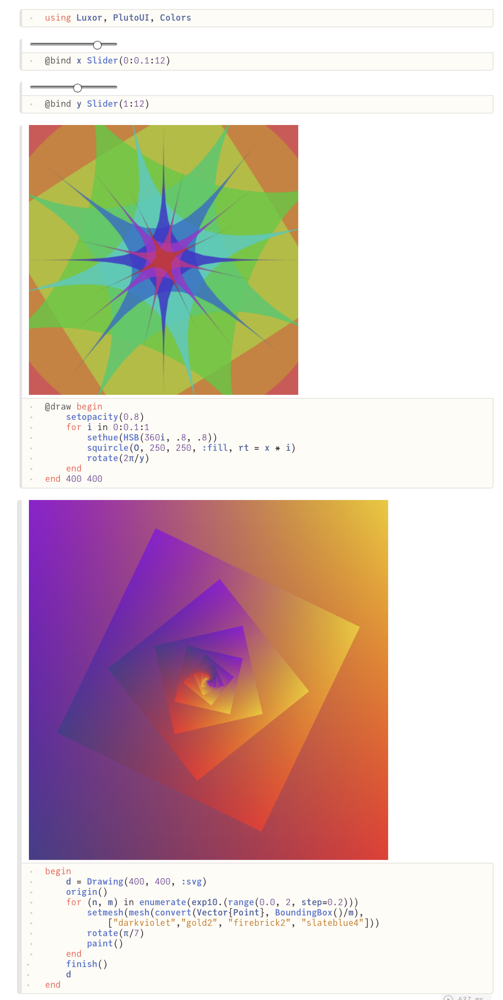
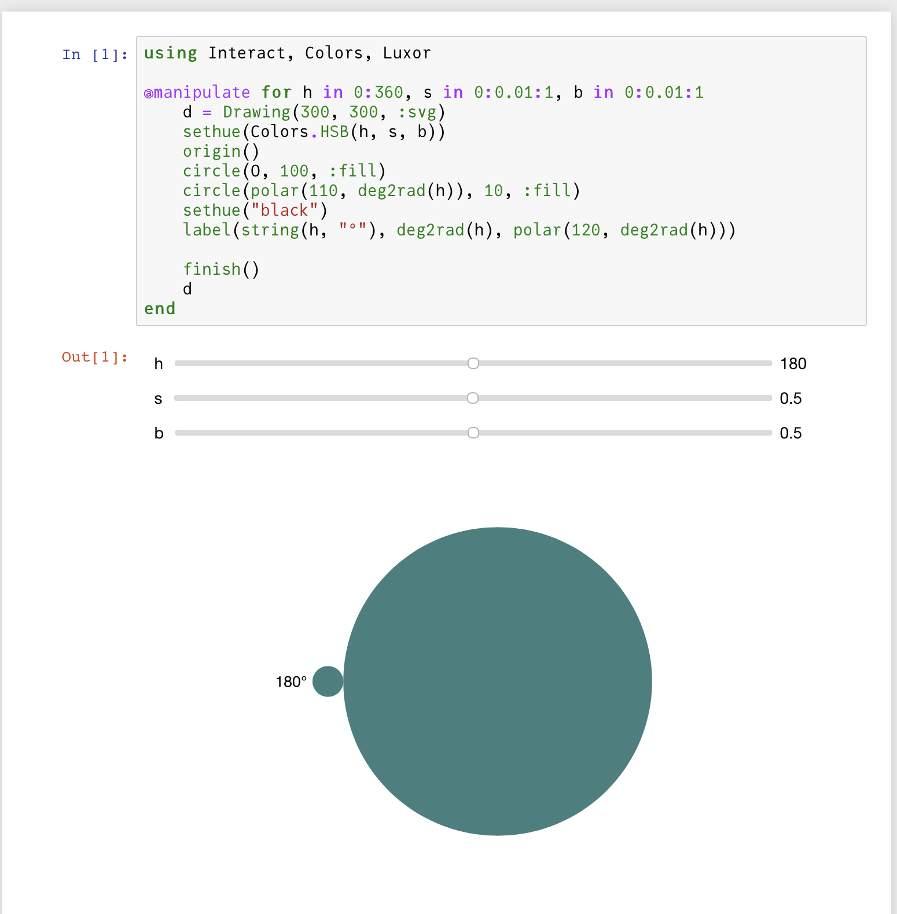

Create a Drawing
In Luxor you always work with a current drawing, so the first thing to do is to create one.
To create a drawing, and optionally specify the filename, type, and dimensions, use the Drawing constructor function.
To finish a drawing and close the file, use finish, and, if the drawing doesn't appear in your notebook, you can launch an external application to view it using preview.
To finish a drawing and close the file, use finish, and, to launch an external application to view it, use preview.

If you're using VS Code, then PNG and SVG drawings should appear in the Plots pane, if it's enabled. In a Pluto notebook, output appears above the cell. In a notebook environment, output appears in the next notebook cell.

SVGs are text-based, and can get quite big. Up to a certain size, SVGs will preview as easily and quickly as PNGs. As they get larger, though, they'll take longer, and it won't be long before they'll take longer to preview than to create in the first place. Very large drawings in SVG format might not display at all.
Quick drawings with macros
The @draw, @svg, @png, and @pdf macros are designed to let you quickly create graphics without having to provide the usual boiler-plate functions.
The macros are shortcuts, designed to make it quick and easy to get started. You can save a few keystrokes and some time, but, for full control over all parameters, use Drawing.
For example, the Julia code:
@svg circle(Point(0, 0), 20, action = :stroke) 50 50expands to
Drawing(50, 50, "luxor-drawing-(timestamp).svg")
origin()
background("white")
sethue("black")
circle(Point(0, 0), 20, action = :stroke)
finish()
preview()They're just short-cuts. You can omit the width and height (thus defaulting to 600 by 600, except for @imagematrix), and you don't have to specify a filename (you'll get time-stamped files in the current working directory). For multiple lines, use either:
@svg begin
setline(10)
sethue("purple")
circle(Point(0, 0), 20, action = :fill)
endor (less nicely):
@svg (setline(10);
sethue("purple");
circle(Point(0, 0), 20, action = :fill)
)If you don't specify a size, the defaults are usually 600 by 600. If you don't specify a file name, files created with the macros are placed in your current working directory as luxor-drawing- followed by a time stamp. You don't even have to specify the suffix:
@svg juliacircles(150) 400 400 "test" # saves in "test.svg"If you want to create drawings with transparent backgrounds, or use variables to specify filenames, you have to use the longer form, rather than the macros:
Drawing()
background(1, 1, 1, 0)
origin()
setline(30)
sethue("green") # assumes current opacity
box(BoundingBox() - 50, action = :stroke)
finish()
preview()
In-memory drawings
You can choose to store drawings in memory. The advantage is that in-memory drawings are quicker, and the results can be passed as Julia data. Also, it's useful in some environments to not have to worry about writing files.
This syntax for the Drawing function:
Drawing(width, height, surfacetype, [filename])lets you supply surfacetype as a symbol (:svg, :png, :image, or :rec). This creates a new drawing of the given surface type and stores the image only in memory if no filename is supplied.
The @draw macro (equivalent to Drawing(..., :png) creates a PNG drawing in-memory (not saved in a file). You should see it displayed if you're working in a suitable environment (VSCode, Jupyter, Pluto).
The SVG equivalent of @draw is @drawsvg.
Use svgstring() to extract the SVG source for a finished SVG drawing.
If you want to generate SVG without making a drawing, use @savesvg instead of @drawsvg.
Concatenating SVG drawings
The Julia functions hcat() and vcat() can concatenate two SVG drawings horizontally or vertically.
using Luxor
d1 = @drawsvg begin
sethue("blue")
paint()
end 200 100
d2 = @drawsvg begin
sethue("yellow")
paint()
end 200 100
vcat(d1, d2);fill-opacity:1;" d="M 0 0 L 200 0 L 200 100 L 0 100 Z M 0 0 "/>
<path style=" stroke:none;fill-rule:nonzero;fill:rgb(100%25,100%25,0%25);fill-opacity:1;" d="M 0 100 L 200 100 L 200 200 L 0 200 Z M 0 100 "/>
</g>
</svg>)
Interactive drawings
Using Pluto
Pluto notebooks typically display the final result of a piece of code in a cell. So there are various ways you can organize your drawing code. For example:
using Luxor, PlutoUI, Colors
@bind x Slider(0:0.1:12)
@bind y Slider(1:12)
@draw begin
setopacity(0.8)
for i in 0:0.1:1
sethue(HSB(360i, .8, .8))
squircle(O, 50, 50, action = :fill, rt = x * i)
rotate(2π/y)
end
end 100 100or
begin
d = Drawing(800, 800, :svg)
origin()
for (n, m) in enumerate(exp10.(range(0.0, 2, step=0.2)))
setmesh(mesh(convert(Vector{Point}, BoundingBox()/m),
["darkviolet","gold2", "firebrick2", "slateblue4"]))
rotate(π/7)
paint()
end
finish()
d
end
Using Jupyter notebooks (IJulia and Interact)
Currently, you should use an in-memory SVG drawing to display graphics if you're using Interact.jl. This example provides an HSB color widget.
using Interact, Colors, Luxor
@manipulate for h in 0:360, s in 0:0.01:1, b in 0:0.01:1
d = Drawing(300, 300, :svg)
sethue(Colors.HSB(h, s, b))
origin()
circle(Point(0, 0), 100, action = :fill)
circle(polar(110, deg2rad(h)), 10, action = :fill)
sethue("black")
label(string(h, "°"), deg2rad(h), polar(120, deg2rad(h)))
finish()
d
end
Drawing pixels
The Drawing() function accepts an array of ARGB32 values as a drawing surface.
ARGB32 is a type of 32 bit unsigned integer that combines four values (8 bits for alpha, 8 bits for Red, 8 for Green, and 8 for Blue) into a 32-bit number between 0 and 4,294,967,296. ARGB32 is defined in ColorTypes.jl, and is available in Luxor.jl via Colors.jl, as Luxor.Colors.ARGB32, or, if you're using Colors.jl or Images.jl, directly as ARGB32.
using Luxor
A = zeros(Luxor.Colors.ARGB32, 150, 600) # 150 rows, 600 columns
Drawing(A)
for i in 1:15:150
A[i:i+10, 1:600] .= Luxor.Colors.RGB(rand(), rand(), rand())
end
origin()
for i in 1:100
randomhue()
ngon(rand(BoundingBox()), 15, 4, 0, :fill)
end
finish()
As a standard Julia array, A will be shown as an image in your notebook or editor if you're using Images.jl.
In this example the array uses Julian "column-major" array addressing. Luxor functions use the Point type on a Cartesian coordinate system, where the origin is (by default) at the top left of the drawing. Locations along the x-axis correspond to the column indices of the array, locations along the y-axis correspond to the rows of the array (until you use the origin() function, for example).
You can also create a pixel array on a PNG drawing when saved as a file:
using Luxor
using Images
A = zeros(ARGB32, 50, 50)
Drawing(A, "/tmp/t.png")
for p in eachindex(A)
A[p] = RGBA(rand(), rand(), rand(), 1)
end
finish()
preview()Extracting the drawing as an image
If you create a drawing using Drawing(w, h, :png), you can use the image_as_matrix function at any stage in the drawing process to extract the drawing in its current state as a matrix of pixels.
See the Drawings as image matrices section for more information.
Recordings
The :rec option for Drawing() creates a recording surface in memory. You can then use snapshot(filename, ...) to copy the drawing into a file.